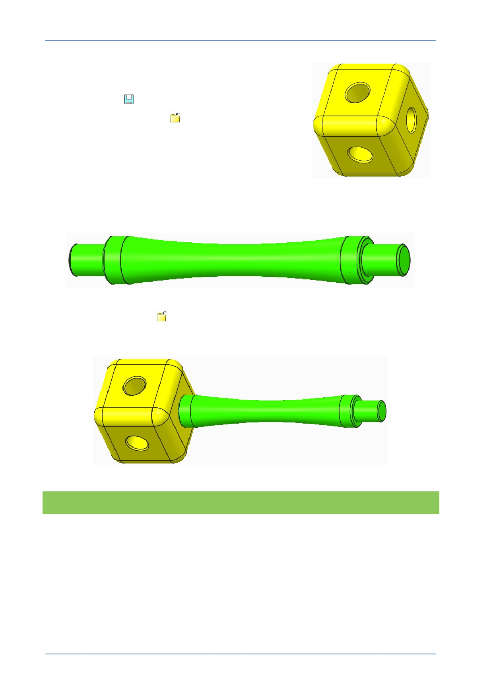

PTC Academic Program
The new appearance is now applied to the part.
4. Saving and closing your model:
Click Save
to save your work.
Click Close Window
from the Quick Access
toolbar.
The window containing the cube will close, leaving the
assembly window active with the colored corner cube.
5. Applying an appearance to the part:
Repeat the process, applying a different colored texture to the strut part.
6. Click Close Window
from the Quick Access tool.
Notice that because Creo Parametric assemblies are associative, the new appearances
are immediately displayed in the assembly. A change anywhere is seen everywhere.
What have you learned?
Opening/closing a part from an assembly.
Applying textures – Applying a default color appearance to a part.
Saving and closing the current model.
© 2012 PTC
Creo Parametric 2.0 Primer
Page 76